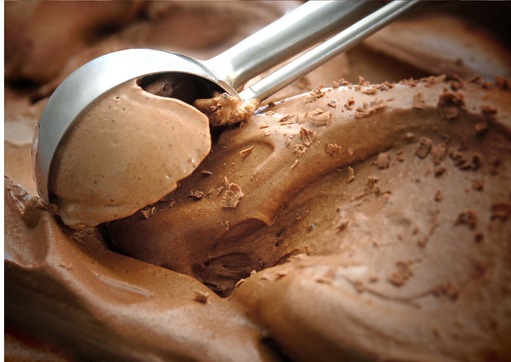

Confira os nossos sorvetes!
Sorvete no copo
Confira tudo sobre nossos deliciosos sorvetes no copo.
Sorvetes premium
Confira tudo sobre nossos deliciosos sorvetes premium.
Sorvete artesanal
Confira tudo sobre nossos deliciosos sorvetes artesanais.
Sorvete na casquinha
Confira tudo sobre nossos deliciosos sorvetes na casquinha.
Sorvetes italiano
Confira tudo sobre nossos deliciosos sorvetes italianos.

Sabores tradicionais
Confira tudo sobre nossos deliciosos sorvetes tradicionais.